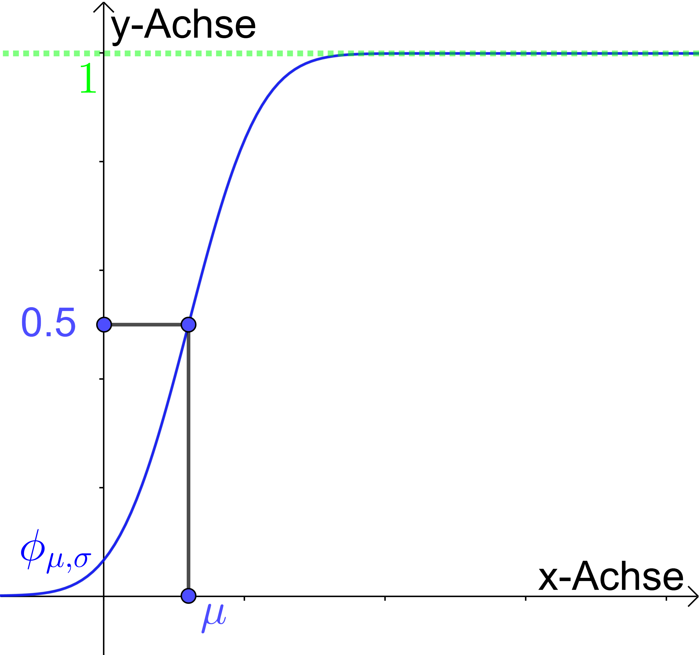
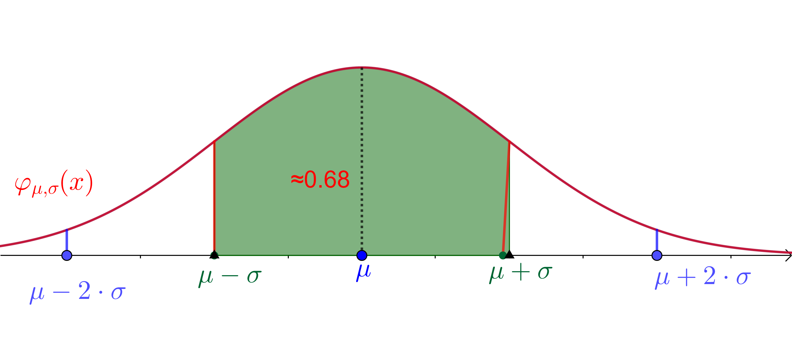

| diskrete Zufallsvariablen | stetige Zufallsvariablen | |
| Dichtefunktion / PDF/PMF | \( f(x) = P(X = x) \) | \( f(x) = F'(x) \ne P(X = x) \) |
| Kumulative Verteilungsfunktion / CDF | \( F(x) = P(X \le x) = \sum\limits_{u \le x}^{} {f(u)} \) | \( F(x)= P(X \le x) =\int\limits_{ - \infty }^x {f(u){\mkern 1mu} {\mkern 1mu} du} \) |
| Wahrscheinlichkeiten |
\( P(a \le X \le b) = \sum\limits_{a \le x \le b}^{} {f(x)} \) \( P(a < X \le b) = \sum\limits_{ a< x \le b}^{} {f(x)} \) \( P(a < X < b) = \sum\limits_{ a< x < b}^{} {f(x)} \) \( P(a< X ) = 1- F(a) \) |
\( \left.\begin{array} \\ P(a \leq X \leq b) \\ P(a < X \leq b) \\ P(a < X < b)
\end{array}\right\} = \int\limits_a^b {f(x)dx} \)
\( P(a< X ) = 1- F(a) \) |
| Graphische Darstellung von \( f \) | Stabdiagramm | Graph |
| Erwartungwert | \( E(X) = \sum\limits_{x \in\mathbb R }^{} {f(x) \cdot x} \) | \( E(X) = \int\limits_{ - \infty }^\infty {f(x) \cdot x} \,dx \) |
| Varianz | \( V(X) = \sum\limits_{x \in \mathbb R}^{} {f(x) \cdot (x} - E(X){)^2} \) | \( V(X) = \int\limits_{ - \infty }^\infty {f(x) \cdot {{(x - E(X))}^2}} \,dx \) |
| Satz Für diskrete und stetige Zufallsvariablen \( X \) und \( Y \) gelten die folgenden Regeln: (1) Linearität des Erwartungswertes: \( E(X + Y) = E(X) + E(Y) \) und \( E(\alpha X) = \alpha E(X) \) mit \( \alpha \in \mathbb R \). (2) Verschiebungssatz für die Varianz: \( V(X) = E({X^2}) - {(E(X))^2} \) (3) \( V(\alpha X + \beta ) = {\alpha ^2} \cdot V(X) \) mit \( \alpha ,\beta \in \mathbb R \). (4) Sind \( X \) und \( Y \) stochastisch unabhängig, so gilt: \( V(X + Y) = V(X) + V(Y) \) |
Es ist effizienter, die Varianz mithilfe des Verschiebungssatzes zu berechnen als mithilfe der Definition.
Eine diskrete Zufallsvariable \( X \) heisst hypergeometrisch verteilt mit den Parametern \( n \) (Anzahl Ziehungen ohne Zurücklegen), \( N \) (Gesamtzahl aller Objekte) und \( M \) (Gesamtzahl aller Merkmalsträger), wenn ihre Dichtefunktion (PMF) gegeben ist durch
\( P(X = x) =\frac{ \left( {\begin{array}{*{20}{c}} M\\ x \end{array}} \right)\cdot \left( {\begin{array}{*{20}{c}} N-M\\ n-x \end{array}} \right)}{\left( {\begin{array}{*{20}{c}} N\\ n \end{array}} \right)} \)
Schreibweise: \( X \sim H(N,M,n) \).
\( X \) zählt, wie
oft bei der \( n \)-fachen Ziehung (nacheinander und ohne Zurücklegen) ein Merkmalsträger gezogen wird.
| Satz Für eine Zufallsvariable \( X \sim H(N,M,n) \) gilt:
(2) \( {\sigma ^2} = {\rm{V}}(X) = n\cdot \frac{M}{N}\cdot (1-\frac{M}{N})\cdot \frac{N-n}{N-1} \) (3) \( \sigma = S(X) = \sqrt {V(X)} \) |
Eine Zufallsvariable \( X \) heisst Bernoulli-verteilt, wenn sie nur zwei verschiedene Werte annehmen kann: den Wert 1 mit der Wahrscheinlichkeit \( P(X = 1) = p \) und den Wert 0 mit der Wahrscheinlichkeit \( P(X = 0) = 1 - p \).
|
Satz Für Bernoulli-verteilte Zufallsvariablen \( X \) gilt: (1) \(E(X)=E(X^2)=p\).(2) \(V(X)=p\cdot (1-p)\) |
Eine diskrete Zufallsvariable \( X \) heisst binomialverteilt mit den Parametern \( n \) (Anzahl Wiederholungen) und \( p \) (Wahrscheinlichkeit für ein Ergebnis 1), wenn ihre Dichtefunktion (PMF) gegeben ist durch
\( P(X = x) = \left( {\begin{array}{*{20}{c}} n\\ x \end{array}} \right) \cdot {p^x} \cdot {(1-p)^{n - x}} \)
Schreibweise: \( X \sim B(n;p) \).
\( X \) zählt, wie oft bei der \( n \)-fachen Wiederholung eines Bernoulli-Experiments das Ergebnis 1 eintritt. Die Wahrscheinlichkeit für das Ergebnis \(0\) wird üblicherweise mit \(q=1-p\) bezeichnet.
Die \(B(n;p)\)-verteilte Zufallsvariable \( X \) kann als Summe von \( n \) Bernoulli-verteilten Zufallsvariablen \( X_i \) aufgefasst werden: \( X=\sum_{i=1}^{n} X_i \). Dabei hält \(X_i\) das Ergebnis des \( i \)-ten Experiments fest, und es gilt: \(
P(X_i =1)=p\).
| Satz Für eine Zufallsvariable \( X \sim B(n;p) \) gilt:
(2) \( {\sigma ^2} = {\rm{V}}(X) = npq \) (3) \( \sigma = S(X) = \sqrt {npq} \) |
| Faustregel zur Approximation Wenn die Bedingung \( n \leq \frac{N}{20}\) erfüllt ist,
kann die hypergeometrische Verteilung
\( H(N,M,n) \) gut durch die Binomialverteilung \( B(n,\frac{M}{N}) \) angenähert werden: \( H(N,M,n) \approx B(n,\frac{M}{N}) \) |
Eine diskrete Zufallsvariable \( X \) heisst poissonverteilt mit dem Parameter \( \lambda >0 \) (durchschnittliche Anzahl Ereignisse pro betrachtetes Zeitintervall), wenn ihre Dichtefunktion (PMF) gegeben ist durch
\( P(X = x) = {e^{-\lambda}} \cdot \frac{\lambda^x}{x!} \)
Schreibweise: \( X \sim Poi(\lambda) \).
\(
X \) zählt die Anzahl der (stochastisch unabhängigen, gleichartigen) Ereignisse in einem betrachteten Zeitintervall.
| Satz Für eine Zufallsvariable \( X \sim Poi(\lambda) \) gilt:
(2) \( {\sigma ^2} = {\rm{V}}(X) = \lambda \) (3) \( \sigma = S(X) = \sqrt {\lambda} \) |
| Faustregel zur Approximation Wenn die Bedingung \( n \geq 50\) und \( p \leq 0.1\) erfüllt ist,
kann die Binomialverteilung
\( B(n,p) \) gut durch die Poissonverteilung \( Poi(n\cdot p ) \) angenähert werden: \( B(n,p) \approx Poi(n\cdot p ) \). |
Eine stetige Zufallsvariable \(X\) heisst normalverteilt mit den Parametern \( \mu ,\sigma \in \mathbb R \), \( \sigma > 0 \), wenn sie folgende Dichtefunktion (PDF) hat:
\( {\varphi _{\mu ,\sigma }}(x) = \frac{1}{{\sqrt {2\pi } \cdot \sigma }} \cdot {e^{ - \;\frac{1}{2}{{\left( {\frac{{x - \mu }}{\sigma }} \right)}^2}}} \)
Schreibweise: \( X \sim N(\mu ;\sigma ) \)
Die kumulative Verteilungsfunktion (CDF) von \( {\varphi _{\mu ,\sigma }}(x) \) wird mit \( {\phi _{\mu ,\sigma }}(x) \) bezeichnet. Sie ist definiert durch:
\( {\phi _{\mu ,\sigma }}(x) = P(X \le x) = \int\limits_{ - \infty }^x {{\varphi _{\mu ,\sigma }}(t)} \,dt = \frac{1}{{\sqrt {2\pi } \cdot \sigma }} \cdot \int\limits_{ - \infty }^x {{e^{ - \frac{1}{2}{{\left( {\frac{{t - \mu }}{\sigma }} \right)}^2}}}} dt \)

Ist \( \mu = 0 \) und \( \sigma = 1 \), so spricht man von der Standardnormalverteilung. Ihre Dichtefunktion (PDF) wird mit \( \varphi \) bezeichnet; sie ist gegeben durch:
\( \varphi (x) = \frac{1}{{\sqrt {2\pi } }} \cdot {e^{ - \frac{1}{2}{x^2}}} \).
Ihre Verteilungsfunktion (CDF) \( {\phi _{0 ,1 }}(x) \) wird mit \( \phi(x) \) bezeichnet. Schreibweise: \( X \sim N(0;1) \).
Die Verteilungsfunktion der Normalverteilung
kann nicht auf elementare Weise berechnet werden. Für ihre Werte gibt es
Tabellen (Papula 12. Aufl. S. 514); die Tabellen beziehen sich allerdings immer
auf die Standardnormalverteilung.
Die Dichtefunktion (PDF) \( {\varphi _{\mu ,\sigma }}(x) \) hat folgende Eigenschaften:
(a) Sie ist symmetrisch bezüglich der Geraden \( x = \mu \).
(b) Sie hat Wendepunkte an den Stellen \( \mu - \sigma \) und \( \mu + \sigma \).
(c) Sie ist normiert, d.h. es gilt:
\( \int\limits_{ - \infty }^\infty {{\varphi _{\mu ,\sigma }}(x)} \,dx = \frac{1}{{\sqrt {2\pi } \cdot \sigma }} \cdot \int\limits_{ - \infty }^\infty {{e^{ - \frac{1}{2}{{\left( {\frac{{x - \mu }}{\sigma }} \right)}^2}}}} dx = 1 \)
(d) Eine Änderung von \( \mu \) bewirkt eine Verschiebung in x-Richtung; je grösser \( \sigma \) ist, desto breiter und niedriger wird die Glockenkurve.
(e) Für eine Zufallsvariable \( X \sim N(\mu ;\sigma ) \) gilt: \( E(X) = \mu \) und \( V(X) = \sigma^2 \).
Bei einer Zufallsvariable X, die der Normalverteilung \( N(\mu ;\sigma ) \) folgt, liegen

|
Wichtige Eigenschaften einer \( N(\mu ;\sigma ) \) -verteilten Zufallsvariable \(X \) \( \phi_{\mu, \sigma}'(x)=\varphi_{\mu, \sigma}(x) \) \( \phi_{\mu, \sigma}(x)=\phi(\frac{x -\mu}{\sigma}) \) \( P(a \leq X \leq b) =\phi_{\mu, \sigma}(b)-\phi_{\mu, \sigma}(a) \) \( \begin{eqnarray} P( | X -\mu | \leq \varepsilon) & = & P(\mu -\varepsilon \leq X \leq \mu +\varepsilon) \\ &= & 2 \cdot \phi_{\mu, \sigma}(\mu +\varepsilon)-1 \\ &=& 1- 2 \cdot \phi_{\mu, \sigma}(\mu -\varepsilon) \end{eqnarray} \) In den Aussagen können \(\leq\) Zeichen nach Belieben durch \(<\) Zeichen ersetzt werden.
|
|
Zentraler Grenzwertsatz
Gegeben sind lauter identisch verteilte und stochastisch unabhängige Zufallsvariablen \( {X_1},{X_2},... \), alle mit demselben Erwartungswert \( \mu \) und derselben Varianz \( \sigma^2 \) . Dann hat die Summe \( {S_n} = \sum\limits_{i = 1}^n {{X_i}} \) den Erwartungswert \( n\mu \) und die Varianz \( n{\sigma ^2} \) und ist annähernd \( N(n\mu;\sqrt n \sigma ) \)-verteilt. Das arithmetische Mittel \( {\bar X_n} =S_n/n \) hat den Erwartungswert \( \mu \) und die Varianz \( {\sigma ^2}/n \) und ist annähernd \( N(\mu ;\frac{\sigma }{ \sqrt n} ) \)-verteilt. Die Verteilungsfunktion (CDF) \( {F_n}(u) \) der dazugehörigen standardisierten Zufallsvariablen \( {U_n} = \frac{S_n- n\mu }{{\sqrt n \cdot \sigma }} = \frac{{{\bar X_n} - \mu }}{{ \sigma /\sqrt n }} \) konvergiert für \( n \to \infty \) gegen die Verteilungsfunktion \( \phi (u) \) der Standardnormalverteilung: \( \mathop {\lim }\limits_{n \to \infty } {F_n}(u) = \phi (u) = \frac{1}{{\sqrt {2\pi } }} \cdot \int\limits_{ - \infty }^u {{e^{ - \frac{1}{2}{t^2}}}} dt \) |